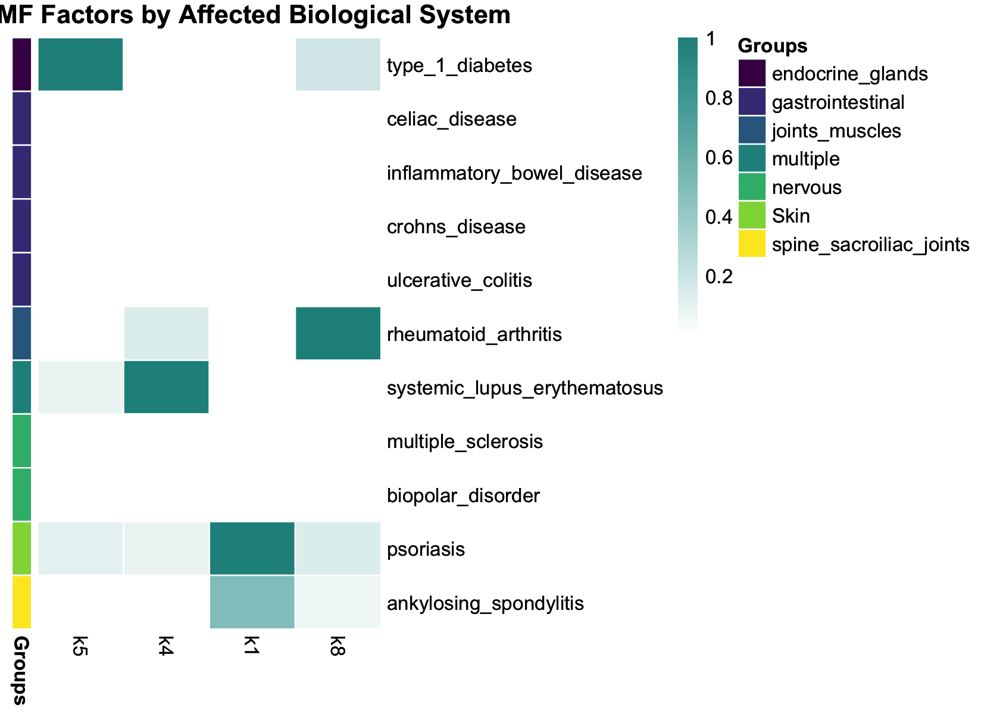
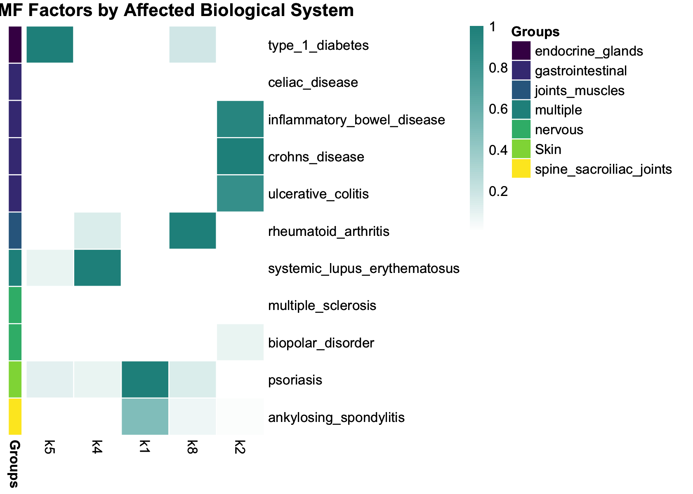
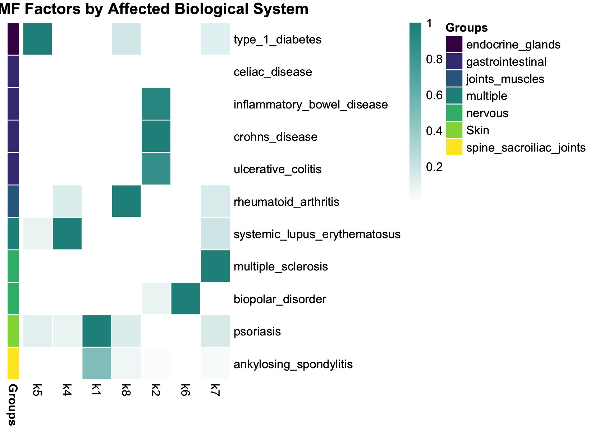
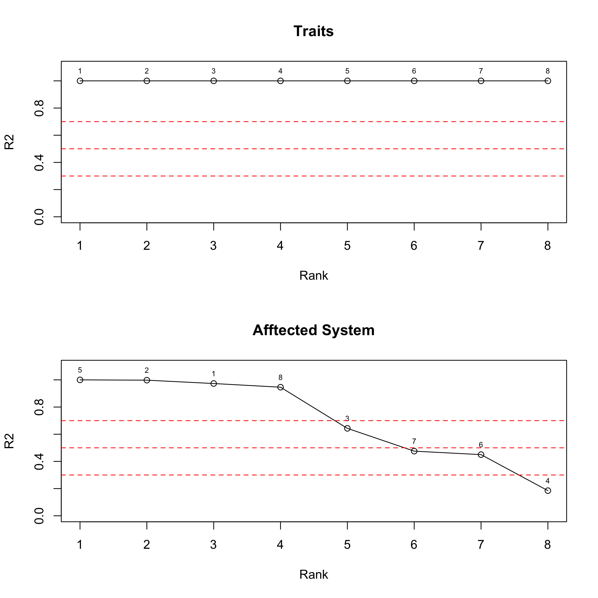
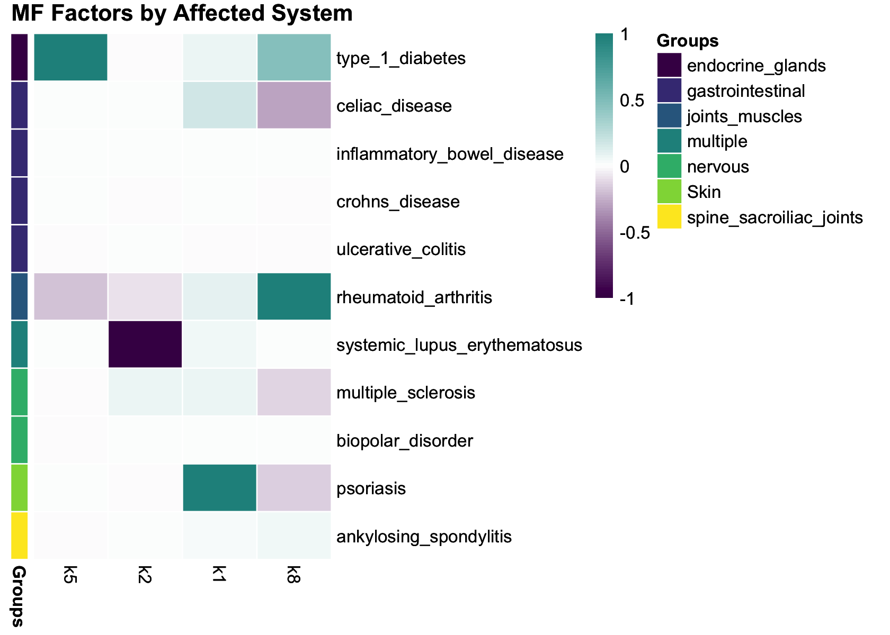
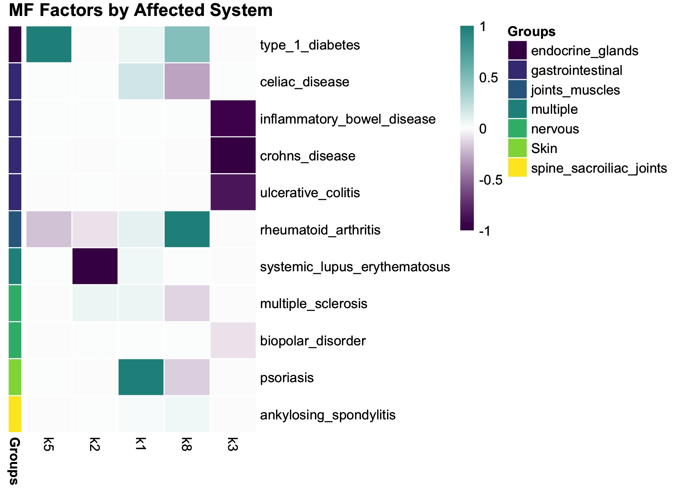
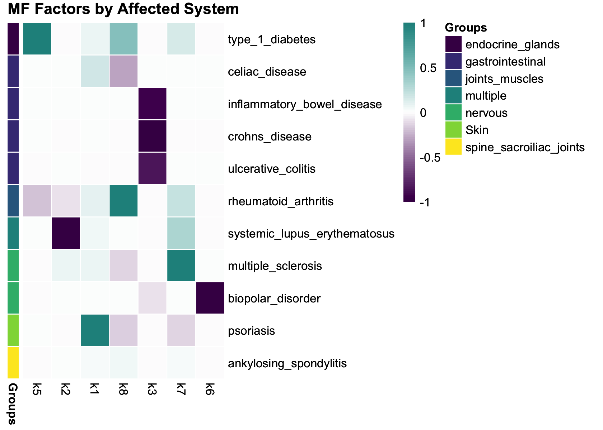

Automatic Grouping of Factors
Zining Qi
Last updated: 2025-05-06
Checks: 7 0
Knit directory: ebmf_immune/analysis/
This reproducible R Markdown analysis was created with workflowr (version 1.7.1). The Checks tab describes the reproducibility checks that were applied when the results were created. The Past versions tab lists the development history.
Great! Since the R Markdown file has been committed to the Git repository, you know the exact version of the code that produced these results.
Great job! The global environment was empty. Objects defined in the global environment can affect the analysis in your R Markdown file in unknown ways. For reproduciblity it’s best to always run the code in an empty environment.
The command set.seed(1) was run prior to running the
code in the R Markdown file. Setting a seed ensures that any results
that rely on randomness, e.g. subsampling or permutations, are
reproducible.
Great job! Recording the operating system, R version, and package versions is critical for reproducibility.
Nice! There were no cached chunks for this analysis, so you can be confident that you successfully produced the results during this run.
Great job! Using relative paths to the files within your workflowr project makes it easier to run your code on other machines.
Great! You are using Git for version control. Tracking code development and connecting the code version to the results is critical for reproducibility.
The results in this page were generated with repository version a3bff80. See the Past versions tab to see a history of the changes made to the R Markdown and HTML files.
Note that you need to be careful to ensure that all relevant files for
the analysis have been committed to Git prior to generating the results
(you can use wflow_publish or
wflow_git_commit). workflowr only checks the R Markdown
file, but you know if there are other scripts or data files that it
depends on. Below is the status of the Git repository when the results
were generated:
Ignored files:
Ignored: .Rproj.user/
Note that any generated files, e.g. HTML, png, CSS, etc., are not included in this status report because it is ok for generated content to have uncommitted changes.
These are the previous versions of the repository in which changes were
made to the R Markdown (analysis/autoimmune_group.Rmd) and
HTML (docs/autoimmune_group.html) files. If you’ve
configured a remote Git repository (see ?wflow_git_remote),
click on the hyperlinks in the table below to view the files as they
were in that past version.
| File | Version | Author | Date | Message |
|---|---|---|---|---|
| Rmd | a3bff80 | “John | 2025-05-06 | update grouping |
| Rmd | 3f6b88e | “John | 2025-05-06 | update grouping |
| Rmd | 505a368 | Zining Qi | 2025-05-06 | add autoimmune grouping |
This analysis applies some automatic grouping of factors for the autoimmune GWAS data, based on the grouping information.
The grouping methods are:
A Simple Automatic Approach Based on ANOVA
Method from GCBD
The grouping information are:
Traits
Affected system
Setup
Load required packages and data:
# Data manipulation and visualization
library(tidyverse)
library(reshape2)
library(cowplot)
library(viridis)
library(Matrix)
library(ggplot2)
# Matrix factorization tools
library(flashier)
library(fastTopics)
# Load preprocessed GWAS effect size matrix
source('../code/group_factors.R')
load('../output/immune_mf_factors.RData')
load('../output/immune_snmf_factors.RData')A Simple Automatic Approach Based on ANOVA
flashier semi-NMF
F <- fl_snmf_ldf$F
k <- ncol(F)
colnames(F) <- paste0("k",1:k)
traits <- rownames(F)
affected_system <- c(
"gastrointestinal", "Skin", "joints_muscles",
"spine_sacroiliac_joints", "nervous",
"gastrointestinal", "gastrointestinal",
"gastrointestinal", "multiple",
"nervous", "endocrine_glands"
)Take a look at the elbow plot:
ordered_df_traits <- ANOVA_factors(F, traits, stats = "R2")
ordered_df_system <- ANOVA_factors(F, affected_system, stats = "R2")
par(mfrow = c(2,1))
plot(ordered_df_traits$rank, ordered_df_traits$stats, type = "o", xlab = "Rank", ylab = "R2", main = "Traits", ylim = c(0,1.1))
text(ordered_df_traits$rank, ordered_df_traits$stats, labels = ordered_df_traits$factor, pos = 3, cex = 0.6)
abline(h = c(0.3,0.5,0.7), col = "red", lty = 2)
plot(ordered_df_system$rank, ordered_df_system$stats, type = "o", xlab = "Rank", ylab = "R2", main = "Afftected System", ylim = c(0,1.1))
text(ordered_df_system$rank, ordered_df_system$stats, labels = ordered_df_system$factor, pos = 3, cex = 0.6)
abline(h = c(0.3,0.5,0.7), col = "red", lty = 2)
par(mfrow = c(1,1))From the plot, each factor is perfectly associated with traits. For affected system, k5, k4, k1, and k8 are perfectly associated with affected system, whereas k2, k6, and k7 have moderate association with affected system.
Now, plot the structure plot by cutting off the factors with \(R^2\) less than 0.7
source('../code/plot_factors.R')
anno_data <- plot_factor_annotation_data(F, affected_system)
factors_to_plot <- paste0("k", ordered_df_system$factor[ordered_df_system$stats > 0.7])
F_ordered <- anno_data$F_ordered[, factors_to_plot]
# Create heatmap
p_snmf_grouping1 <- pheatmap::pheatmap(
F_ordered,
annotation_row = anno_data$annotation_df,
annotation_colors = anno_data$annotation_colors,
cluster_cols = FALSE,
cluster_rows = FALSE,
scale = 'none',
show_colnames = TRUE,
border_color = "white",
main = "Semi-NMF Factors by Affected Biological System",
color = colorRampPalette(c("white", "#21908CFF"))(100)
)
p_snmf_grouping1
Then, plot the structure plot by cutting off the factors with \(R^2\) less than 0.5.
factors_to_plot <- paste0("k", ordered_df_system$factor[ordered_df_system$stats > 0.5])
F_ordered <- anno_data$F_ordered[, factors_to_plot]
# Create heatmap
p_snmf_grouping2 <- pheatmap::pheatmap(
F_ordered,
annotation_row = anno_data$annotation_df,
annotation_colors = anno_data$annotation_colors,
cluster_cols = FALSE,
cluster_rows = FALSE,
scale = 'none',
show_colnames = TRUE,
border_color = "white",
main = "Semi-NMF Factors by Affected Biological System",
color = colorRampPalette(c("white", "#21908CFF"))(100)
)
p_snmf_grouping2
Also, plot the structure plot by cutting off the factors with \(R^2\) less than 0.3.
factors_to_plot <- paste0("k", ordered_df_system$factor[ordered_df_system$stats > 0.3])
F_ordered <- anno_data$F_ordered[, factors_to_plot]
# Create heatmap
p_snmf_grouping3 <- pheatmap::pheatmap(
F_ordered,
annotation_row = anno_data$annotation_df,
annotation_colors = anno_data$annotation_colors,
cluster_cols = FALSE,
cluster_rows = FALSE,
scale = 'none',
show_colnames = TRUE,
border_color = "white",
main = "Semi-NMF Factors by Affected Biological System",
color = colorRampPalette(c("white", "#21908CFF"))(100)
)
p_snmf_grouping3
flashier Laplace MF
Similary, we will try grouping factors by using this ANOVA method.
F <- fl_mf_ldf$F
k <- ncol(F)
colnames(F) <- paste0("k",1:k)
traits <- rownames(F)
affected_system <- c(
"gastrointestinal", "Skin", "joints_muscles",
"spine_sacroiliac_joints", "nervous",
"gastrointestinal", "gastrointestinal",
"gastrointestinal", "multiple",
"nervous", "endocrine_glands"
)Take a look at the elbow plot:
ordered_df_traits <- ANOVA_factors(F, traits, stats = "R2")
ordered_df_system <- ANOVA_factors(F, affected_system, stats = "R2")
par(mfrow = c(2,1))
plot(ordered_df_traits$rank, ordered_df_traits$stats, type = "o", xlab = "Rank", ylab = "R2", main = "Traits", ylim = c(0,1.1))
text(ordered_df_traits$rank, ordered_df_traits$stats, labels = ordered_df_traits$factor, pos = 3, cex = 0.6)
abline(h = c(0.3,0.5,0.7), col = "red", lty = 2)
plot(ordered_df_system$rank, ordered_df_system$stats, type = "o", xlab = "Rank", ylab = "R2", main = "Afftected System", ylim = c(0,1.1))
text(ordered_df_system$rank, ordered_df_system$stats, labels = ordered_df_system$factor, pos = 3, cex = 0.6)
abline(h = c(0.3,0.5,0.7), col = "red", lty = 2)
par(mfrow = c(1,1))From the plot, each factor is perfectly associated with traits. For affected system, k5, k2, k1, and k8 are perfectly associated with affected system, whereas k3, k7, and k6 have moderate association with affected system.
Now, plot the structure plot by cutting off the factors with \(R^2\) less than 0.7
anno_data <- plot_factor_annotation_data(F, affected_system)
factors_to_plot <- paste0("k", ordered_df_system$factor[ordered_df_system$stats > 0.7])
F_ordered <- anno_data$F_ordered[, factors_to_plot]
# Create heatmap
p_mf_grouping1 <- pheatmap::pheatmap(
F_ordered,
annotation_row = anno_data$annotation_df,
annotation_colors = anno_data$annotation_colors,
cluster_cols = FALSE,
cluster_rows = FALSE,
scale = 'none',
show_colnames = TRUE,
border_color = "white",
main = "MF Factors by Affected System",
color = colorRampPalette(c("#440154FF", "white", "#21908CFF"))(100)
)
p_mf_grouping1
Then, plot the structure plot by cutting off the factors with \(R^2\) less than 0.5.
factors_to_plot <- paste0("k", ordered_df_system$factor[ordered_df_system$stats > 0.5])
F_ordered <- anno_data$F_ordered[, factors_to_plot]
# Create heatmap
p_mf_grouping2 <- pheatmap::pheatmap(
F_ordered,
annotation_row = anno_data$annotation_df,
annotation_colors = anno_data$annotation_colors,
cluster_cols = FALSE,
cluster_rows = FALSE,
scale = 'none',
show_colnames = TRUE,
border_color = "white",
main = "MF Factors by Affected System",
color = colorRampPalette(c("#440154FF", "white", "#21908CFF"))(100)
)
p_mf_grouping2
Also, plot the structure plot by cutting off the factors with \(R^2\) less than 0.3.
factors_to_plot <- paste0("k", ordered_df_system$factor[ordered_df_system$stats > 0.3])
F_ordered <- anno_data$F_ordered[, factors_to_plot]
# Create heatmap
p_mf_grouping3 <- pheatmap::pheatmap(
F_ordered,
annotation_row = anno_data$annotation_df,
annotation_colors = anno_data$annotation_colors,
cluster_cols = FALSE,
cluster_rows = FALSE,
scale = 'none',
show_colnames = TRUE,
border_color = "white",
main = "MF Factors by Affected System",
color = colorRampPalette(c("#440154FF", "white", "#21908CFF"))(100)
)
p_mf_grouping3
sessionInfo()
# R version 4.4.3 (2025-02-28)
# Platform: aarch64-apple-darwin20
# Running under: macOS Sequoia 15.4.1
#
# Matrix products: default
# BLAS: /Library/Frameworks/R.framework/Versions/4.4-arm64/Resources/lib/libRblas.0.dylib
# LAPACK: /Library/Frameworks/R.framework/Versions/4.4-arm64/Resources/lib/libRlapack.dylib; LAPACK version 3.12.0
#
# locale:
# [1] en_US.UTF-8/en_US.UTF-8/en_US.UTF-8/C/en_US.UTF-8/en_US.UTF-8
#
# time zone: America/Chicago
# tzcode source: internal
#
# attached base packages:
# [1] stats graphics grDevices utils datasets methods base
#
# other attached packages:
# [1] fastTopics_0.6-192 flashier_1.0.56 ebnm_1.1-34 Matrix_1.7-3
# [5] viridis_0.6.5 viridisLite_0.4.2 cowplot_1.1.3 reshape2_1.4.4
# [9] lubridate_1.9.4 forcats_1.0.0 stringr_1.5.1 dplyr_1.1.4
# [13] purrr_1.0.4 readr_2.1.5 tidyr_1.3.1 tibble_3.2.1
# [17] ggplot2_3.5.2 tidyverse_2.0.0
#
# loaded via a namespace (and not attached):
# [1] tidyselect_1.2.1 farver_2.1.2 fastmap_1.2.0
# [4] lazyeval_0.2.2 promises_1.3.2 digest_0.6.37
# [7] timechange_0.3.0 lifecycle_1.0.4 invgamma_1.1
# [10] magrittr_2.0.3 compiler_4.4.3 rlang_1.1.6
# [13] sass_0.4.10 progress_1.2.3 tools_4.4.3
# [16] yaml_2.3.10 data.table_1.17.0 knitr_1.50
# [19] prettyunits_1.2.0 htmlwidgets_1.6.4 scatterplot3d_0.3-44
# [22] plyr_1.8.9 RColorBrewer_1.1-3 Rtsne_0.17
# [25] workflowr_1.7.1 withr_3.0.2 grid_4.4.3
# [28] git2r_0.36.2 colorspace_2.1-1 scales_1.4.0
# [31] gtools_3.9.5 cli_3.6.5 rmarkdown_2.29
# [34] crayon_1.5.3 generics_0.1.3 RcppParallel_5.1.10
# [37] rstudioapi_0.17.1 httr_1.4.7 tzdb_0.5.0
# [40] pbapply_1.7-2 cachem_1.1.0 splines_4.4.3
# [43] parallel_4.4.3 softImpute_1.4-1 vctrs_0.6.5
# [46] jsonlite_2.0.0 hms_1.1.3 mixsqp_0.3-54
# [49] ggrepel_0.9.6 irlba_2.3.5.1 horseshoe_0.2.0
# [52] trust_0.1-8 plotly_4.10.4 jquerylib_0.1.4
# [55] glue_1.8.0 uwot_0.2.3 stringi_1.8.7
# [58] Polychrome_1.5.4 gtable_0.3.6 later_1.4.2
# [61] quadprog_1.5-8 pillar_1.10.2 htmltools_0.5.8.1
# [64] truncnorm_1.0-9 R6_2.6.1 rprojroot_2.0.4
# [67] evaluate_1.0.3 lattice_0.22-6 pheatmap_1.0.12
# [70] RhpcBLASctl_0.23-42 SQUAREM_2021.1 ashr_2.2-63
# [73] httpuv_1.6.15 bslib_0.9.0 Rcpp_1.0.14
# [76] gridExtra_2.3 deconvolveR_1.2-1 whisker_0.4.1
# [79] xfun_0.52 fs_1.6.6 pkgconfig_2.0.3